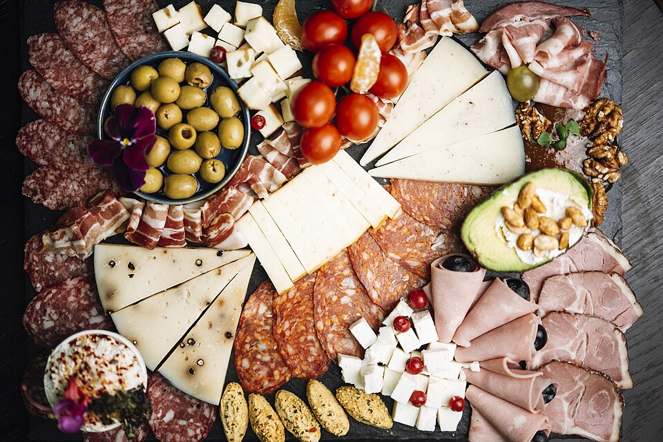
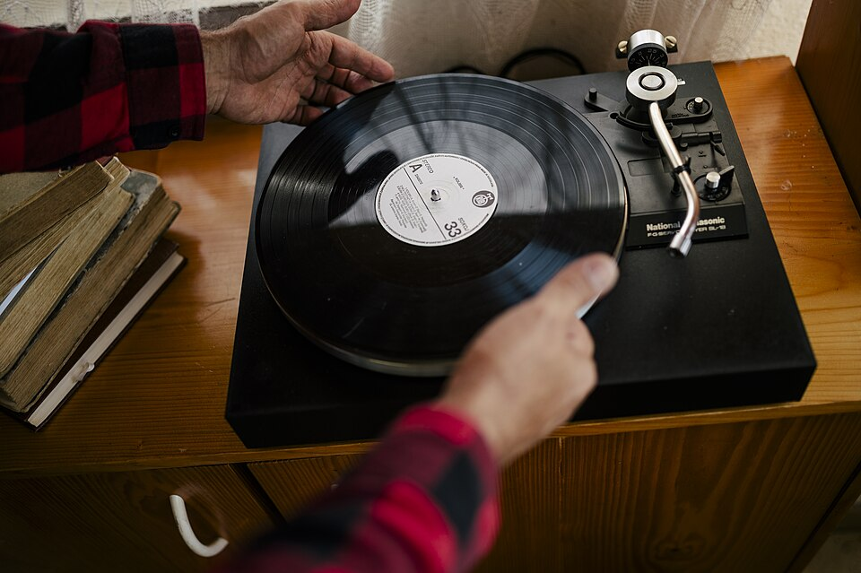

Weekly Hours
- Monday: 4:00 PM – 10:00 PM
- Tuesday: Closed
- Wednesday – Thursday: 4:00 PM – 10:00 PM
- Friday: 4:00 PM – 12:00 AM (Midnight)
- Saturday: 12:00 PM – 12:00 AM (Midnight)
- Sunday: 12:00 PM – 10:00 PM
Plan your evening glass of orange wine, draft vermouth, or vinyl listening session at Substrate. We are located at 512 East 15th Street in Optimist Park with on-site lot parking, easy Lynx Blue Line access, and an open outdoor patio.
Address:
512 East 15th Street
Charlotte, NC 28205
Conveniently positioned between Optimist Hall and the historic Belmont neighborhood.
Reservations: None needed.
Walk-in counter service with open seating throughout our bar, lounge, and courtyard patio.
Retail natural wine bottles available for takeaway.
Arriving at our 15th Street enoteca is simple:


What to expect when hanging out at Substrate: